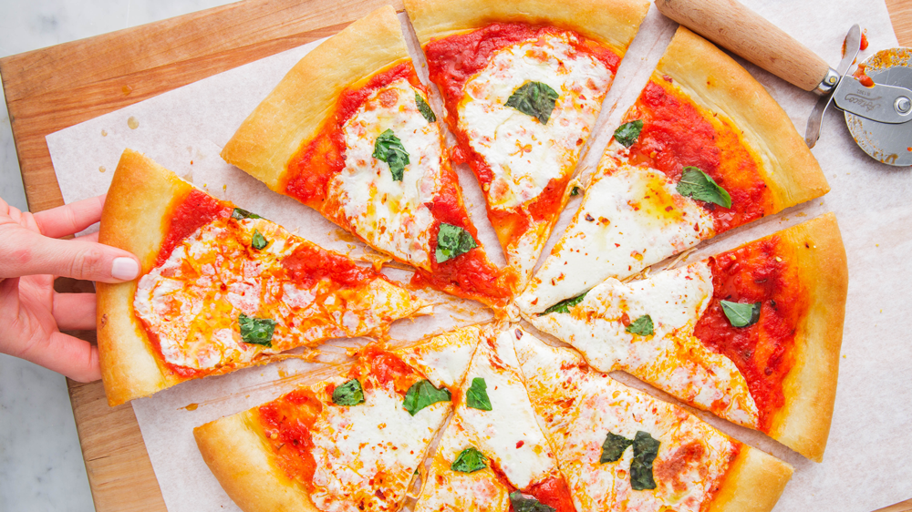
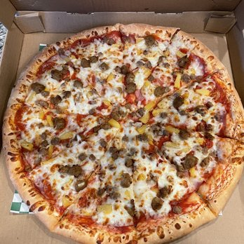
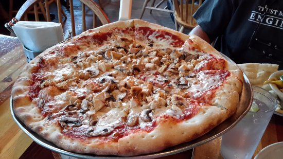
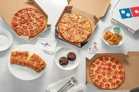
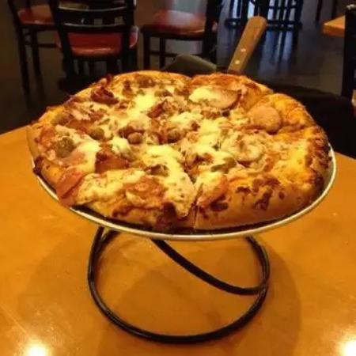
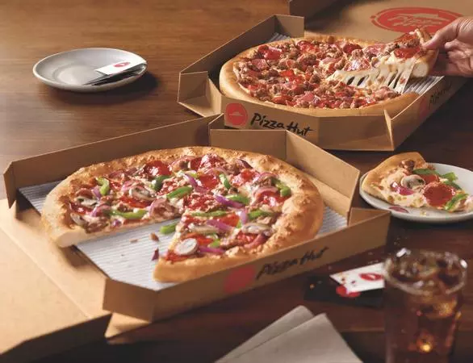

Home |
Pizza Places
Salt City
Main Street
Domino's
Firebird
Pizza Hut

The Best Pizza in Utah
Who doesn't love a cheesy slice of heaven at a party? Pizza has become one of the staple foods for an average American looking for an above-average Friday night. This site will compare 5 noteworthy pizza locations in Utah.
This site will compare 5 different locations and rate them of four aspects
Toppings
Service Quality
Crust
Price
-

- Toppings: 10/10, The toppings are always on-point. The BBQ Chicken pizza would literally melt in my mouth.
- Service quality, 8/10: The staff were always very friendly, and efficient. I tipped when I could.
- Crust: 6/10, While quite tasty, the crust has a texture more like regular bread than actual pizza crust.
- Price 2/10, The pizza overall is fantastic, the price is not. This is a mom-and-pop operation, so they need to be able to sustain themselves, and the pizza is well worth it, but the price is high for anything other than a very special occasion.
-

- Toppings: 10/10, easily some of the best pizza I've had. The toppings are fresh and delicious.
- Service Quality: 3/10, Mostly teenagers working there, I’ve gone three times, and they have gotten my order wrong two of the three times. Although even with the wrong order, the pizza was still great. That speaks volumes.
- Crust: 8/10, The crust is phenomenal.
- Price: 5/10, I use a discount when I go, but even without, the price isn't extraordinary.
-

- Toppings: 6/10, as far as a chain goes, the toppings are fairly good.
- Service Quality: 6/10, They are friendly with their customers, but they are not known for going above and beyond.
- Crust: 8/10, The crust is pretty good for a chain, and usually have garlic seasoning as well.
- Price: 10/10, Domino's almost always have some sort of deal or special happening if you ask. Asking is key, the price is ok without them, but the specials really make pizza night easy on the wallet.
-

- Toppings: 5/10, this was more of a sit-down type of pizza place, the pizza wasn't outstanding. They relied more on the ambience of the restuarant for a dining experience.
- Service quality: 5/10, not outstanding, nto terrible.
- Crust: 6/10, the crust is good, not great.
- Price 4/10, I used a coupon, but otherwise the price would not be ideal.
-

- Toppings: 4/10, It is cheap, but filling.
- Service Quality: 5/10, It is a mainstream chain, and the service isn’t poor, it is just average.
- Crust: 5/10, not terrible, but nothing to write home about.
- Price: 8/10, if you want budget pizza, pizza hut is one of the first places to look, but you get what you pay for.
Top